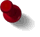

___Els Van Nuffel___
klas: 1A
geboren op: 14 september

over mezelf: Ik sta met heel veel plezier in het eerste leerjaar. Elk jaar opnieuw is het spannend om de kleuters die binnen komen, te leren lezen, schrijven en zo veel meer. Elke keer weer is het een nieuwe uitdaging. Mijn lievelingsvak ? Ik hou heel veel van voorlezen . Ik vind lachen, plezier maken, lekker eten, wandelen en lezen ook heel leuk.